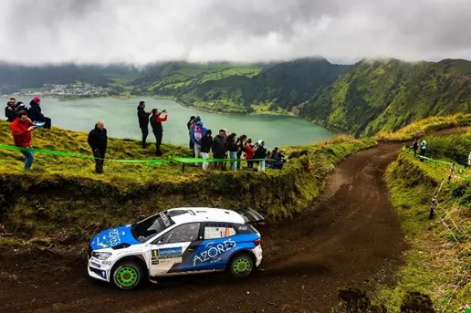
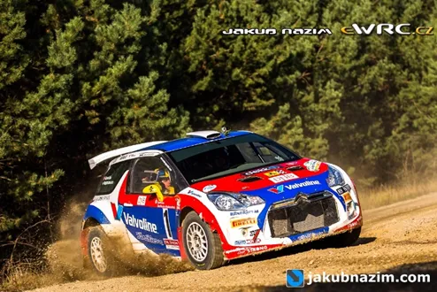
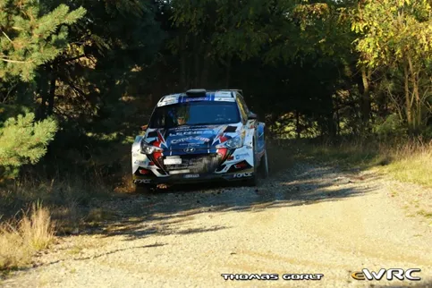
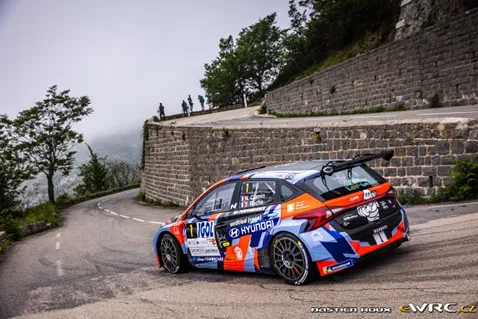
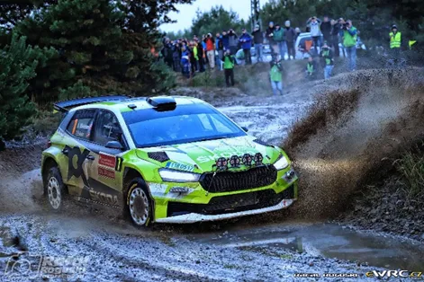

The new Face-Lifted FIA backed Rally Championship which makes it's return this weekend
There might be no rallies for the WRC and ERC this weekend, but that doesn’t mean that there aren’t any other events happening at this time.
Firstly Rally Azores is on. The rally held in the middle of the Atlantic Ocean was dropped from the ERC calendar this season but has still attracted an all-star entry list headlined by 9 times World Champion Sebastien Loeb, 3 times WRC winner and WRC2 and ERC champion Andreas Mikkelsen and 2017 JWRC champion and 2 time ERC winner Nil Solans.
1. Sebastien Loeb in a Skoda RS Rally2 is leading the rally at the time of me writing this
But apart from Azores, a heavily facelifted FIA competition is having its season opener. The European Rally Trophy (not to be confused with the Euro Rally Trophée). This competition was first introduced by the FIA in 2014 as an evolution of the European Rally Cup which acted like a 2nd rate ERC, having regional rallies from mostly (but not limited to) Central and Eastern Europe.

2. Anders Grondal in a Citroen DS3 R5 in the 2015 ERT Lausitz Rally
From 2016 onwards the competition stopped being a multi round championship and instead became a one round winner takes it all competiton, where the top drivers from regional championships like the Balkan, Baltic, Celtic, Central, Iberian BeneLux and Scandinavian would fight it out for who is… the king of the farmers ? Ok, as you can see the format didn’t really make any sense with the final round having as little as 1 driver in some seasons.

3. Ondřej Bisaha won the 2020 ERT crown as the only entrant in the final round
For that reason, the FIA have modified the format for the 2023 season, and reverting back to the multi round format. But what is important is that the calendar has also taken a big step up compared to 2015 which was the last time the series had a similar format. Gone are rallies like Rally Sredna Gora in (in which a 208 R2 won overall back in the day), and in have come rallies like Ypres, Ulster and Donegal in Ireland, Cote d’Azur, Rallye Du Chablais and Rallye Du Valais from Switzerland and Rali Terras d'Aboboreira from Portugal which is based around Amarante, a famous stage of Rally Portugal.

4. Nicolas Ciamin in a Hyundai i20 Rally2 in last year’s Rally d'Antibes - Côte d'Azur, which is part of the ERT this year
The calendar consists of 20 rounds in 14 different countries. The calendar consists of rounds of the Alps Rally Trophy, Balkan Rally Trophy, Celtic Rally Trophy, Central Rally Trophy, Iberian Rally Trophy and Scandinavian Rally Trophy with drivers in each of the championships scoring points in an attempt to qualify for the FIA European Rally Trophy Final. The top 10 in each class in each FIA European Rally Trophy will be eligible for the ERT Final which will be held in Lausitz like last year.

5. Andreas Mikkelsen debuted the new Skoda Fabia RS Rally2 in last year’s Lausitz Rally
So will you be watching ? Rally ValMez is this weekend in the Czech Republic with Jan Kopecky, Filip Mares and Jan Cerny in the entry list to name a few. I am eager to see how the season progresses and the amount of entries the competition will have. Let’s hope it doesn’t end up like the European Rally Cup, as it appears this new format gives the series more potential for something good.


Comments